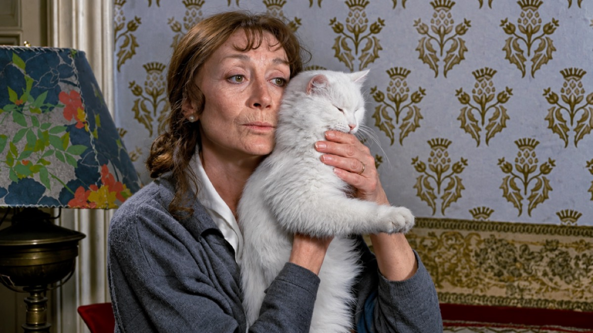
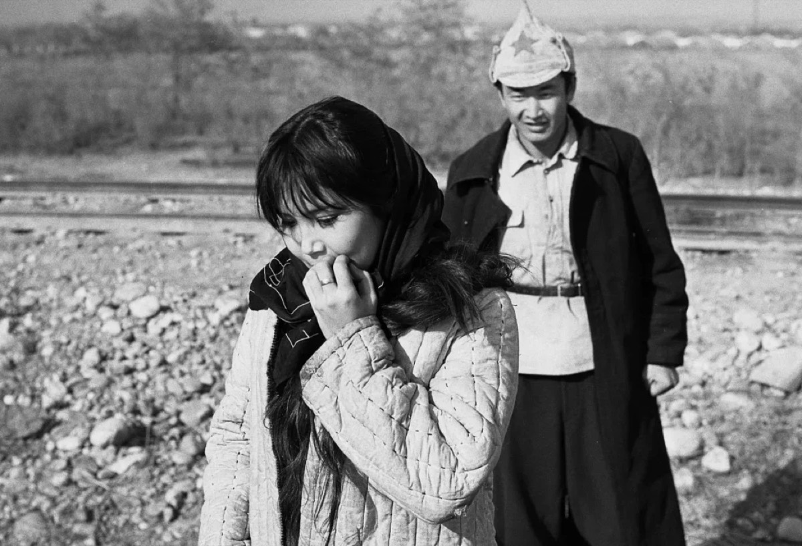

Kadınların Kamusal Alanda Film İzleme Deneyimi ve Tiyatro/Sinema Salonları
Osmanlı’nın son döneminden Cumhuriyet’in erken yıllarına uzanan tarihsel çizgide toplumsal yaşamın en köklü dönüşümlerinden biri, kamusal alanın cinsiyetlendirilmiş sınırlarının yeniden çizilmesiyle yaşanmıştır.…

Osmanlı’nın son döneminden Cumhuriyet’in erken yıllarına uzanan tarihsel çizgide toplumsal yaşamın en köklü dönüşümlerinden biri, kamusal alanın cinsiyetlendirilmiş sınırlarının yeniden çizilmesiyle yaşanmıştır. Geleneksel mahalle dokusu ve katı mahremiyet kuralları içinde ev içi alana hapsedilen kadının görünürlük kazanması, yalnızca hukukî bir düzenleme değil, aynı zamanda gündelik yaşam pratiklerinin baştan sona yeniden kurgulanması anlamına gelmektedir.
Bu bağlamda tiyatro ve sinema salonları, yalnızca sanatsal ürünlerin tüketildiği mekanlar olmanın ötesine geçerek, modernleşme projesinin somutlaştığı ve toplumsal cinsiyet rollerinin yeniden müzakere edildiği birer laboratuvar işlevi görmüştür. Karanlık salonların sunduğu anonimlik ile fuaye alanlarının yarattığı karşılaşma zemini, kadının kamusal özne olarak varoluşunu perçinleyen en kritik eşiklerden birini oluşturmuştur.
Tanzimat ve Meşrutiyet dönemlerinde İstanbul’un iki yakası arasında bölünen eğlence kültürü, kadının seyirci ve icracı olarak konumunu keskin hatlarla ayırmaktaydı. Direklerarası’ndaki tuluat ve ortaoyunu mekanlarında kadın seyirciler için ayrılan kafesli localar, paravanlar ve “kadınlara mahsus” matineler, kamusal alana katılımın ancak mekansal bir tecrit ve görünmezlik koşuluyla mümkün olabildiğini göstermekteydi. Aynı dönemde Beyoğlu’nun kozmopolit atmosferindeki tiyatro ve erken dönem sinema salonlarında ise gayrimüslim kadınların sahnede ve salonda daha serbest dolaşımı söz konusuyken, Müslüman Türk kadınının bu mekanlara adımı sıkı zabıta denetimleri ve toplumsal baskılarla sınırlandırılmıştı. Seyir deneyimi, kadının bakışını gizlediği ve bakışlardan sakındığı bir gözetim rejimi altında gerçekleşiyordu.
Atatürk’ün öncülüğünde hayata geçirilen Cumhuriyet devrimleri, kadın haklarını yalnızca yasal metinlerle güvence altına almakla kalmamış, kadının kamusal mekanda erkeklerle eşit ve yan yana var olmasını modernleşmenin temel ölçütü haline getirmiştir. Afife Jale’nin sahneye çıkışıyla başlayan ve Bedia Muvahhit ile kurumsallaşan Müslüman Türk kadınının sahne üzerindeki varlığı, bizzat Atatürk’ün teşvikleriyle meşruiyet kazanmıştır. Tiyatro sahnesinde kendi bedeni ve sesiyle yer alan kadın figürü, salonun karanlığında oturan hemcinsleri için de güçlü bir özdeşleşme ve özgürleşme modeli yaratmıştır. Kadının üretim sürecine dahil olması, tüketim alanındaki mekansal engellerin yıkılmasının da önünü açan en güçlü dinamik olmuştur.
Kadının yalnızca sandık başında değil; sokağın, parkın, konser salonunun ve sinemanın da aslî sahibi olduğu bilincini pekiştirmiştir. Hukukî eşitlik ile kültürel görünürlük arasındaki bu organik bağ, 1920’lerin ortalarından itibaren sinema ve tiyatro salonlarındaki “harem-selamlık” uygulamasının kaldırılmasıyla somut bir mekansal devrime dönüşmüştür. Artık kadınlar ve erkekler aynı kapıdan girip aynı koltuk sıralarını paylaşmaya, aynı perdeye bakıp aynı duygusal tepkileri yan yana vermeye başlamışlardır. Böylece geleneksel toplumsal kodların kırıldığı ve modern yurttaşlık kimliğinin gündelik alışkanlıklarla içselleştirildiği tarihsel bir kırılma anları yaşanmıştır.
Yeni başkentin inşasıyla birlikte Ankara’da açılan tiyatro ve sinema salonları, bu toplumsal dönüşümün vitrini niteliğindeydi. Halkevi sahneleri, Ankara Palas’ın kültürel etkinlikleri ve yeni açılan modern sinemalar, genç Cumhuriyet’in idealize ettiği kadın-erkek birlikteliğinin en canlı sahnelerine ev sahipliği yapmıştır. Ankara’nın bozkır ortasında yükselen bu modern sanat mekanlarına gitmek, yalnızca bir boş zaman aktivitesi değil; yeni rejimin sunduğu çağdaş yaşam biçimine duyulan bağlılığın kamusal bir beyanıydı. Memur, öğretmen, öğrenci ve bürokrat kimlikleriyle salonları dolduran kadınlar, kamusal alanın merkezinde yer almanın özgüvenini taşımaktaydılar.
Beyoğlu’nun köklü sinema sarayları ile Direklerarası’nın dönüşen eğlence mekanları arasındaki tarihsel farklar, Cumhuriyet ile birlikte yeni bir senteze evrilmiştir. Beyoğlu’ndaki Elhamra, Alkazar ve Sümer gibi görkemli sinemalara gidiş, başlı başına ritüelistik bir hazırlık ve kamusal performans gerektiriyordu. Kadınların bu mekanlara giderken tercih ettikleri kıyafetler; tayyörler, şapkalar, eldivenler ve modern kesimli mantolar, yalnızca bir moda takipçiliğinin değil,bedenin kamusal alandaki yeni temsiliyetinin göstergeleriydi. Çarşaf ve peçenin yerini alan bu yeni giyim kuşam kodları,kadının artık gizlenen bir nesne değil, kendi bedeninin ve kamusal duruşunun hakimi olan bir birey olduğunu ilan ediyordu.
Kıyafetlerdeki bu dönüşüme, salon içindeki ve fuayedeki hal, tavır ve beden dili de eşlik etmiştir. Eskinin çekingen, başı öne eğik ve bakışlarını kaçıran kadın figürünün yerini; fuayede kahvesini yudumlayan, oyun veya film üzerine eleştirel sohbetlere katılan, sigarasını zarafetle içen ve erkek muhataplarıyla göz teması kurarak konuşan özgüvenli bir kadın profili almıştır. Sinema ve tiyatroya gitme hali, ev içi mahremiyetten çıkıp sokağın ritmine karışmayı, akşam saatlerinde dahi kamusal alanda var olabilmeyi ve sanatsal zevklerini özgürce ifade edebilmeyi içeren çok katmanlı bir toplumsal pratiğe dönüşmüştür.
Sinemanın karanlık salonu, toplumsal cinsiyet ilişkileri açısından paradoksal ama bir o kadar da özgürleştirici bir mekanizma sunmuştur. Işıkların sönmesiyle birlikte toplumsal hiyerarşilerin ve gözetleyici bakışların geçici olarak askıya alındığı bu karanlık, kadınlara kendi duygularını sansürsüzce yaşama imkanı tanımıştır. Perdedeki hikayelere gülmek,ağlamak veya heyecanlanmak, kadının kamusal alanda duygusal dışavurum hakkını kazanması anlamına geliyordu. Karanlığın sağladığı bu güvenli sığınak, ışıklar yandığında fuayeye taşan özgüvenli toplumsal etkileşimlerin de psikolojik zeminini hazırlamıştır.
Üretim ve tüketim süreçlerinin kesişiminde yer alan kadın ve erkeklerin sinema ve tiyatro ekseninde kurdukları bu yeni ilişkisellik, toplumsal cinsiyet rollerinin esnemesini sağlamıştır. Sahne arkasında yönetmen, senarist, oyuncu veya teknik çalışan olarak emeğini ortaya koyan kadınlar ile salonlarda biletini alıp yerini alan kadın seyirciler, kültür endüstrisinin iki yakasını birbirine bağlamıştır. Erkeklerle aynı sanatsal üretim bandında omuz omuza çalışan kadınların varlığı, sinema ve tiyatro mekanlarının erkek egemen tekelini kırmış ve bu alanları gerçek anlamda müşterek kamusal mekanlara dönüştürmüştür.
Bununla birlikte, kamusal alanda film ve tiyatro izleme deneyimi, sınıf, eğitim ve kent-taşra ayrımı gibi sosyolojik dinamiklerden bağımsız gelişmemiştir. Büyük kentlerin merkezindeki modern salonlarda hızla benimsenen bu yeni kamusal görgü kuralları, taşra kasabalarında daha yavaş ve temkinli adımlarla yaygınlaşmıştır. Aile matineleri veya kadınlara özel seansların bir süre daha varlığını sürdürmesi, geleneksel alışkanlıklar ile modern kamusal talepler arasındaki geçiş sürecinin sancılarını ve müzakere alanlarını yansıtmaktadır. Yine de her bir sinema bileti ve her bir tiyatro koltuğu, kadının kamusal alandaki meşruiyetini genişleten sessiz ama kararlı birer adım olmuştur.
Türkiye’nin modernleşme serüveninde tiyatro ve sinema salonları, yalnızca sanatın icra edildiği mimarî yapılar değil; kadının kamusal varoluş mücadelesinin kazanıldığı ve gündelik hayata yerleştiği en önemli toplumsal mekanlardır. Atatürk devrimlerinin sağladığı hukukî ve siyasî kazanımlar, Beyoğlu’nun ışıltılı fuayelerinden Ankara’nın yeni sahnelerine uzanan bu kültürel pratiklerle ete kemiğe bürünmüştür. Kadınların ve erkeklerin aynı mekanda, eşit yurttaşlar olarak yan yana oturup aynı perdeye bakabilmeleri; kıyafetlerinden duruşlarına, sohbetlerinden sanatsal üretimdeki paylarına kadar uzanan geniş bir yelpazede özgürleşmenin en kalıcı ve estetik tanıklığını oluşturmaktadır.
Sinemaya Yönelim’den
Bölümün tüm yazıları →
Hanım’ın Hüzünlü Bekleyişi: Sinemanın Harcadığı Bir Kraliçe
Gökşen Aydemir

Çizgiden Taşan İhtilal: Sovyet Avangardının Estetik Patlaması ve Türkî Sinemaların Belleğinde Ekim’in İzleri
Gökşen Aydemir

Beyaz Perdenin Kurucu Miti: Türk Sinemasında Mustafa Kemal İmajı, Değişen Paradigmalar ve Temsilin Sınırları
Gökşen Aydemir